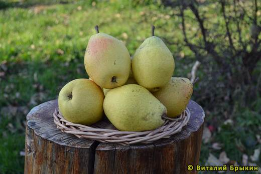
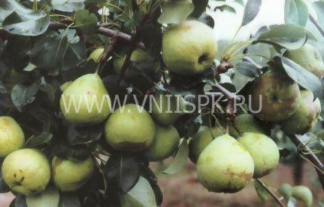
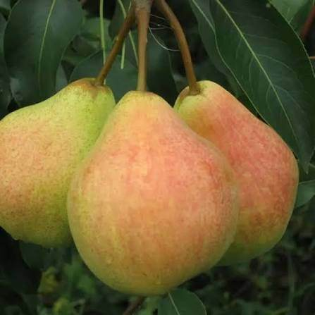
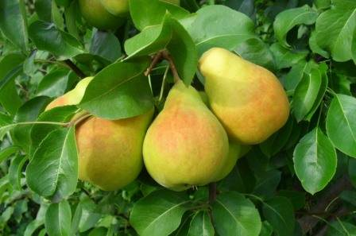

Классика подмосковной селекции: стабильная, зимостойкая груша с сочными сладкими плодами в конце лета — начале осени.




Клик по фото — полный размер. Фотографии иллюстрируют сорт/вид; собраны из открытых источников (питомники, сортовые каталоги, Википедия).
Память Жегалова — сорт Московской сельхозакадемии им. К.А. Тимирязева (С.Т. Чижов, С.П. Потапов), названный в честь выдающегося ботаника С.И. Жегалова. Дерево среднерослое: крона в молодости воронковидная, в плодоношении — овально-округлая, средней густоты.
Плоды средней величины, жёлто-зелёные со слабым красноватым румянцем. Мякоть светло-жёлтовато-белая, очень сочная, нежная, полумаслянистая, тающая, кисловато-сладкая, слабо терпковатая. Сорт зимостойкий (выдерживает −30 °C и ниже, хорошо восстанавливается), устойчив к парше, скороплодный, урожайность стабильная — до 50 кг с дерева.
| Зимостойкость | высокая, до −30 °C и ниже |
| Устойчивость к парше | высокая |
| Самоплодность | самобесплодна (нужны опылители!) |
| Опылители | Кафедральная, Чижовская, Бергамот московский, Любимица Яковлева, Лада, Пава |
| Урожайность | стабильная, до 50 кг с дерева |
| Лёжкость | 1–1,5 мес в комнате, до 2–2,5 мес при 0 °C |
Советы собраны из отзывов садоводов на форумах и из практики питомников; цитаты приведены по источникам ниже.